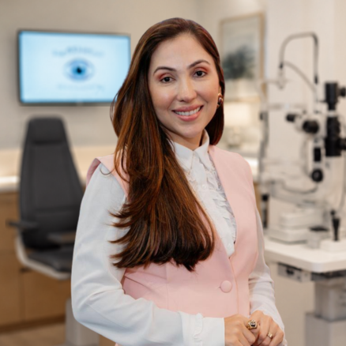
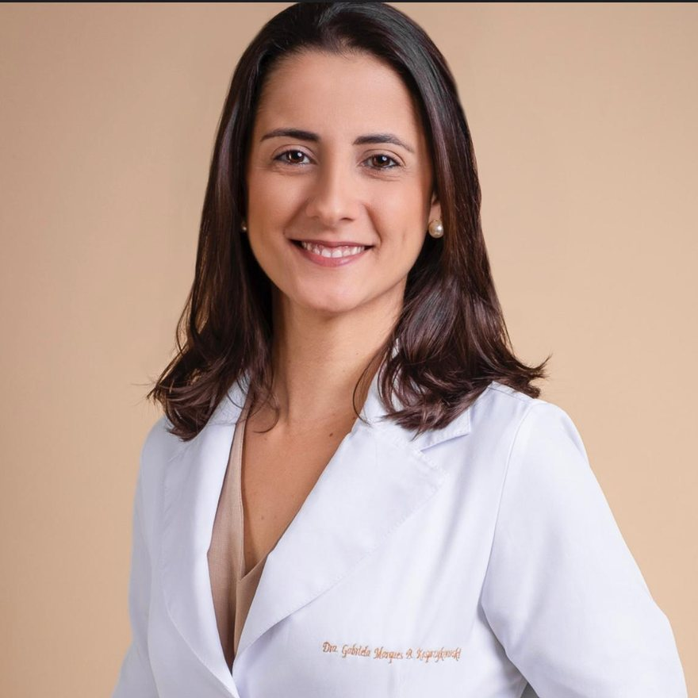

Consulta oftalmológica geral
Avaliação da visão, grau, prevenção e queixas do dia a dia. O ponto de partida para cuidar dos seus olhos.
Agendar consulta geralOftalmologia especializada · Clínica Bem-Estar · Lauro de Freitas — BA
Na Oftalmo Bem-Estar, você é avaliado com tempo, exames completos e explicação clara — em consultas oftalmológicas, cirurgia de catarata, glaucoma, pterígio e blefaroplastia, com exames como mapeamento de retina, OCT e retinografia no mesmo lugar. Em Lauro de Freitas, com convênio ou particular.
Por onde começar
Escolha por onde começar. Se ficar em dúvida, a equipe orienta pelo WhatsApp — sem compromisso.
Avaliação da visão, grau, prevenção e queixas do dia a dia. O ponto de partida para cuidar dos seus olhos.
Agendar consulta geralDiagnóstico, acompanhamento, segunda opinião e análise de laser ou cirurgia — quando indicados.
Agendar avaliação especializadaAvaliação e cirurgia da "carne crescida" no olho — quando vermelha, incomoda ou avança sobre a visão.
Agendar avaliação de pterígioAvaliação da pálpebra caída ou com excesso de pele — quando atrapalha a visão ou incomoda no dia a dia.
Agendar avaliação de pálpebrasVocê se reconhece?
Glaucoma e catarata são doenças — e doença tem tratamento. O problema é que elas não gritam: avançam em silêncio enquanto você troca de óculos, evita dirigir à noite e acha que está tudo bem. Muitos pacientes chegam aqui depois de meses esperando exame, de consultas apressadas em que ninguém explicou nada, ou simplesmente porque o especialista ficava longe demais. Aqui, a conversa começa diferente — e começa perto de casa.
Quero agendar uma avaliaçãoSobre a Oftalmo Bem-Estar
A Oftalmo Bem-Estar é o setor de oftalmologia da Clínica Bem-Estar. Reunimos consultas gerais, exames de imagem e cuidado especializado em catarata, glaucoma, pterígio e blefaroplastia, com uma equipe de oftalmologistas dedicadas a cada área. Cada consulta é conduzida com calma: escuta, avaliação detalhada e explicação em linguagem simples — para que você e sua família participem das decisões com segurança.
Atendemos pessoas de Lauro de Freitas, Camaçari, Simões Filho, Litoral Norte e região que procuram prevenção, diagnóstico, acompanhamento ou uma segunda opinião especializada — sem precisar se deslocar até Salvador.
A Oftalmo Bem-Estar atende dentro da Clínica Bem-Estar, em Lauro de Freitas: um centro de especialidades médicas com mais de 17 especialidades, laboratório de exames, estrutura nova e acessível e estacionamento gratuito. Quando chegar, é só informar na recepção que a consulta é na oftalmologia.
Consultas, exames e tratamentos
A indicação de exames, laser ou cirurgia depende sempre da avaliação médica e das necessidades de cada paciente.
Consulta especializada com avaliação da pressão ocular, do nervo óptico e do seu histórico — com tempo para explicar cada passo do tratamento.
Exames como paquimetria, retinografia, curva de pressão ocular, gonioscopia e OCT.
Iridotomia/iridectomia a laser e trabeculoplastia seletiva (SLT), conforme o tipo de glaucoma.
Técnicas minimamente invasivas (MIGS) e tradicionais, avaliadas conforme o estágio da doença.
Exames que investigam a retina e o nervo óptico, feitos na própria clínica — sem precisar ir a Salvador. Somam-se a paquimetria, curva de pressão ocular e gonioscopia, do check-up do glaucoma.
Exame do fundo do olho, com a pupila dilatada, para avaliar a retina em quem tem diabetes, pressão alta, alto grau de miopia ou queixa de moscas volantes e flashes.
Imagem em camadas do nervo óptico (papila), essencial no acompanhamento do glaucoma, e da mácula, para alterações da retina como as ligadas ao diabetes e à idade.
Fotografia colorida do fundo do olho que documenta a retina e o nervo óptico — permite comparar exames ao longo do tempo e acompanhar a evolução.
Três procedimentos a laser que fazem parte do cuidado com glaucoma e catarata — indicados conforme a avaliação de cada paciente.
Abre uma pequena passagem na íris para prevenir ou tratar o glaucoma de ângulo fechado.
A "limpeza da lente" para quem já operou catarata e voltou a enxergar embaçado.
Laser para o tratamento do glaucoma, que pode reduzir a dependência de colírios em casos selecionados.
Avaliação de como a catarata afeta a sua rotina e orientação sobre o momento certo de operar, com escolha personalizada da lente intraocular. Quando há indicação, a cirurgia combinada trata glaucoma e catarata no mesmo procedimento.
Já operou catarata e voltou a embaçar? Pode ser a opacificação da cápsula posterior — a capsulotomia com YAG laser é o procedimento rápido, em consultório, para esses casos.
Avaliação da pálpebra caída (ptose) ou do excesso de pele nas pálpebras, que pode pesar, cansar a vista e reduzir o campo de visão. A cirurgia é indicada conforme a avaliação — por motivo funcional ou de bem-estar — sempre com orientação clara sobre o procedimento e a recuperação.
O pterígio é a "carne crescida" que avança da parte branca do olho em direção à córnea — comum em quem se expõe muito ao sol e ao vento. Avaliamos o tamanho, os sintomas (vermelhidão, ardência, sensação de areia) e se há indicação de cirurgia, feita com técnica que reduz a chance de o pterígio voltar.
Consulta de rotina para avaliação da visão, atualização do grau, prevenção e queixas oculares do dia a dia — para adultos e idosos.
Dentro da Clínica Bem-Estar você também encontra laboratório de exames e outras especialidades — como endocrinologia, cardiologia e geriatria — úteis para quem convive com diabetes, pressão alta e outras condições que afetam os olhos.
Diferenciais
Não é qualquer oftalmologista que opera catarata, pterígio e pálpebras e acompanha glaucoma de perto. Aqui, cada área tem uma médica dedicada.
Atendimento especializado em Lauro de Freitas, sem precisar ir a Salvador para consultar, examinar ou fazer laser.
Opções de atendimento por diversos planos de saúde, além do atendimento particular.
A avaliação completa feita na própria estrutura, sem correr atrás de exame em outro endereço.
Tempo para ouvir, examinar e explicar o diagnóstico e as opções de cuidado. A família participa.
Clínica nova, acessível para cadeirantes, com estacionamento gratuito e outras especialidades no mesmo prédio.
Passo a passo
Diga se procura consulta geral, exames, catarata, glaucoma, pterígio ou blefaroplastia.
A equipe orienta sobre médica, horário, convênio e o que levar.
A consulta considera seus sintomas, histórico, exames e rotina.
Você recebe orientação clara sobre o acompanhamento e os próximos passos.
Equipe médica
Três oftalmologistas reunidas para atender desde a consulta de rotina até os casos que exigem avaliação especializada.

Glaucoma e Catarata
OftalmologistaDúvidas frequentes
Não. Na Oftalmo Bem-Estar, em Lauro de Freitas, você encontra oftalmologistas com atuação especializada em catarata, glaucoma, pterígio e blefaroplastia, além de exames como mapeamento de retina, OCT e retinografia e dos procedimentos a laser — tudo no mesmo endereço.
Sim. A Clínica Bem-Estar atende diversos planos de saúde, além do atendimento particular. A cobertura pode variar conforme a médica e o tipo de consulta ou procedimento. Confirme o seu plano pelo WhatsApp.
Sim. Além dos colírios, existem laser e procedimentos cirúrgicos. A indicação depende do tipo e do estágio do glaucoma, dos exames, da pressão ocular e da resposta aos tratamentos que você já usou. Só a avaliação define o melhor caminho para o seu caso.
Existe, sim — e hoje boa parte é minimamente invasiva, com menos cortes e recuperação mais tranquila do que a cirurgia tradicional. O medo é natural e legítimo. Na consulta, explicamos os riscos e benefícios com calma, sem pressão.
Não no mesmo dia do diagnóstico. A cirurgia é avaliada quando a catarata começa a atrapalhar sua rotina — dirigir, ler, enxergar com luz. A consulta ajuda a entender o momento certo e as opções de lente.
Pode acontecer. Em alguns casos, a cápsula que sustenta a lente fica opaca com o tempo — é a chamada opacificação da cápsula posterior. Quando indicada, a capsulotomia com YAG laser é um procedimento rápido, feito em consultório, para "limpar" essa cápsula. A avaliação define se é o seu caso.
Muitos pacientes convivem com ardência, olho seco e vermelhidão dos colírios. Em alguns casos, o laser ou a cirurgia podem reduzir essa dependência. Cada caso é único — só a avaliação individual pode indicar.
Sim, os três são feitos na própria clínica. O mapeamento de retina e a retinografia avaliam e documentam o fundo do olho; o OCT gera imagens em camadas do nervo óptico (papila), usado no glaucoma, e da mácula, para alterações da retina. Traga o pedido médico, se tiver, e confirme a cobertura do seu convênio pelo WhatsApp.
Nem sempre. Pterígios pequenos e sem sintomas podem apenas ser acompanhados, com proteção contra sol e vento e colírios lubrificantes. A cirurgia é avaliada quando ele cresce em direção à córnea, causa vermelhidão e irritação frequentes ou começa a atrapalhar a visão. A consulta define o melhor momento.
Não. O excesso de pele ou a queda da pálpebra podem pesar, cansar a vista e reduzir o campo de visão. A avaliação identifica se há indicação funcional, de bem-estar ou ambas, e explica o procedimento, a recuperação e o que esperar de forma realista.
Claro. Filhos e acompanhantes podem falar com a equipe, organizar o agendamento e participar da consulta. Muitas decisões são tomadas em família — e a gente ajuda nisso.
Sim. A Clínica Bem-Estar tem estacionamento gratuito e estrutura nova, acessível para cadeirantes e pessoas com mobilidade reduzida.
Documento com foto, cartão do convênio (se houver), a lista de colírios e medicamentos em uso, receitas anteriores e exames já realizados. Se for consulta com dilatação da pupila, vá acompanhado ou evite dirigir na volta.
Agende sua avaliação
Converse com a equipe, diga o tipo de atendimento que procura e receba orientação para marcar a consulta certa — com convênio ou particular. Sem pressa, sem pressão.
Para avaliação da visão, grau, prevenção e acompanhamento da saúde ocular.
Para avaliação especializada, exames, acompanhamento, laser ou análise cirúrgica.